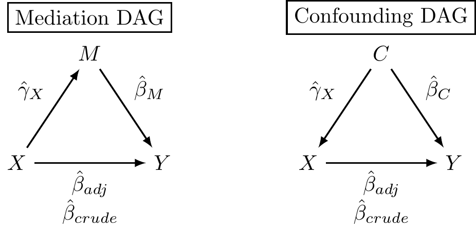

The Three Models for Mediation and Confounding
This page is part of the University of Colorado-Anschutz Medical Campus’ BIOS 6618 Recitation collection. To view other questions, you can view the BIOS 6618 Recitation collection page or use the search bar to look for keywords.
The Three Models for Mediation and Confounding
In confounding and mediation, we set up similar directed acyclic graphs (DAGs) for our three variables (e.g., the outcome \(Y\), the primary explanatory variable \(X\), and the confounder/mediator \(C\)/\(M\)):
Regardless of the question, we have equivalent statistical approaches (i.e., models) to evaluate the potential associations:
- Crude Model: \(\hat{Y}=\hat{\beta}_{01}+\hat{\beta}_{crude} X\)
- Adjusted Model: \(\hat{Y}=\hat{\beta}_{02}+\hat{\beta}_{adj} X + \hat{\beta}_{M} M\) (note, \(\hat{\beta}_{C} C\) for confounding notation in our lectures)
- Covariate Model: \(\hat{M} = \hat{\gamma}_{0} + \hat{\gamma}_{X} X\)
It turns out, that whether we are trying to examine if the variable in question is a mediator or a confounder, they use the exact same three regression models (see “Equivalence of the Mediation, Confounding and Suppression Effect” by MacKinnon, Krull, and Lockwood).
This may seem a bit counterintuitive, since we’re changing the directions of our (proposed) causal relationship. However, when we fit a regression model, the model itself is evaluating the association of the outcome with given predictor(s) and not necessarily its causality (i.e., cause-effect versus correlation).
Further, we are really interested in trying to disentangle the effect of our primary explanatory predictor (i.e., \(X\)), with all these various relationships. If we made \(X\) the outcome in our covariate model, it would be serving a very different role that would not lead to the equivalence of
[ {crude} - {adj} = {X} {M} ]
Proportion Mediated versus Operational Definition of Confounding
A further connection can be made to our formula for operational confounding:
\(\frac{\hat{\beta}_{crude} - \hat{\beta}_{adj}}{\hat{\beta}_{crude}} \times 100\) (favored by biostatisticians)
\(\frac{\hat{\beta}_{crude} - \hat{\beta}_{adj}}{\hat{\beta}_{adj}} \times 100\) (favored by epidemiologists)
and the formula for the proportion mediated by the indirect effect:
- \(\frac{\text{indirect effect}}{\text{total effect}} = \frac{\hat{\beta}_{crude} - \hat{\beta}_{adj}}{\hat{\beta}_{crude}}\)
We see here that the biostatistician-favored operational confounding criterion and the proportion mediated are the same! Again, mathematically the idea is equivalent, but the context and conclusions are very different based the question we are seeking to answer (i.e., is the variable a confounder with respect to our primary explanatory variable \(X\) and outcome \(Y\)?; is the variable a mediator with respect to our primary explanatory variable \(X\) and outcome \(Y\)?).